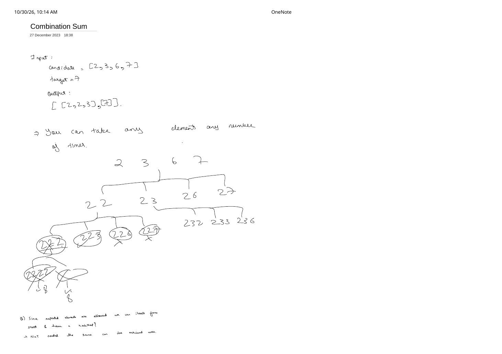
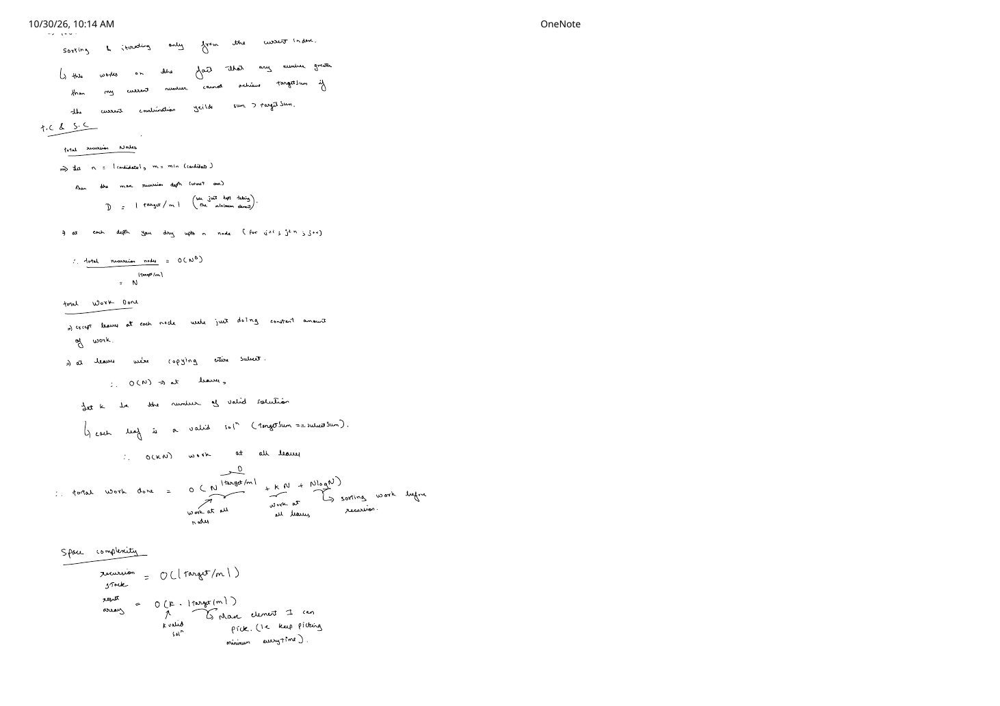
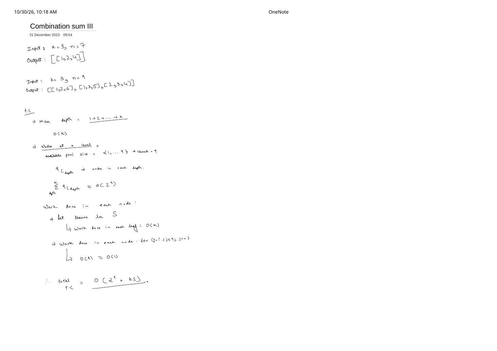

The Combination Sum Family (I–IV) and Target Sum
Expanded from handwritten competitive coding study notes (05_Combination_Sum.pdf, 06_Combination_Sum_II.pdf, 07_Combination_sum_III.pdf, 08_Combination_sums_IV.pdf, 09_Target_sum.pdf)
Few problem families expose the boundary between backtracking and dynamic programming as cleanly as LeetCode's Combination Sum I–IV plus Target Sum. Changing a single rule—whether an element may be reused, whether the input contains duplicates, whether output size is fixed to $k$, or whether [1, 1, 2] and [1, 2, 1] count separately—completely changes the loop start, the pruning guard, and even whether recursion needs memoization.
Master Constraint Comparison: I–IV + Target Sum
| Problem | Input Pool | Reuse & Choice Rule | Order Matters? | Return Type & Best Paradigm |
|---|---|---|---|---|
| Comb Sum I (LC 39) |
Distinct positive ints | Unlimited reuse: loop j = i..n-1, recurse dfs(j, rem - a[j]) |
No ([2,2,3] once) |
All vectors · Backtracking $O\bigl(n^{T/m} + k \cdot \frac{T}{m}\bigr)$ |
| Comb Sum II (LC 40) |
Positive ints with duplicates | Use each index $\le 1$: sort, skip j > i && a[j]==a[j-1], recurse dfs(j + 1) |
No (deduplicated) | All vectors · Backtracking $O(n \log n + 2^n + k \cdot n)$ |
| Comb Sum III (LC 216) |
Fixed digits {1..9} |
Use each digit $\le 1$, exact length $k$: loop d = start..9, recurse dfs(d + 1) |
No | All $k$-tuples · Backtracking $O\bigl(\sum_{d=0}^k \binom{9}{d} + k \cdot S\bigr)$ |
| Comb Sum IV (LC 377) |
Distinct positive ints | Unlimited reuse, restart j = 0..n-1 at every step |
Yes! (Ordered tuples) | Count only · 1D DP / Memo $O(T \cdot n)$ (pure BT TLEs!) |
| Target Sum (LC 494) |
Non-negative ints (may repeat) | Must use every index with +a[i] or -a[i] |
Fixed index positions | Count only · $O(2^n)$ BT $\to$ Subset-Sum DP $O(n \cdot S)$ |
1. Combination Sum I (LeetCode 39) — Unlimited Reuse Without Permutations
Given distinct positive integers candidates = [2, 3, 6, 7] and target = 7, return all unique combinations summing to 7 where any candidate may be chosen an unlimited number of times: [[2, 2, 3], [7]].
Why Not Loop From Index 0 With a Hash Map?
On page 1 of 05_Combination_Sum.pdf, tracing from 2 → 2,3 raises a natural question: if we allow 2,3 to pick 2 again, we generate [2, 3, 2]—a duplicate permutation of [2, 2, 3]! Do we need a hash set of sorted vectors to deduplicate?
j (Instead of j + 1) Does Two Jobs at Once
- Canonical non-decreasing order eliminates permutation duplicates: By iterating
for (int j = i; j < n; ++j)and recursing withdfs(j, ...), we can pickcandidates[j]again as many times as we want, but once we advance toj + 1we never step back to smaller indices. Thus[2, 2, 3]is generated, while[2, 3, 2]and[3, 2, 2]are structurally unreachable. - Sorted sum cutoff (
break, notcontinue): Oncecandidatesis sorted ascending, ifcandidates[j] > rem(as at[2, 2, 2, 2] = 8 > 7or[2, 2, 6] = 10 > 7), every subsequentcandidates[j'] ≥ candidates[j]will also exceedrem—so we immediatelybreakout of the loop!
class Solution {
void dfs(int i, int rem, const vector<int>& cand,
vector<int>& path, vector<vector<int>>& ans) {
if (rem == 0) {
ans.push_back(path); // valid combination found
return;
}
for (int j = i; j < (int)cand.size(); ++j) {
if (cand[j] > rem) break; // sorted cutoff: all later cand[j'] > rem too!
path.push_back(cand[j]);
dfs(j, rem - cand[j], cand, path, ans); // pass j (NOT j + 1) to allow reuse
path.pop_back();
}
}
public:
vector<vector<int>> combinationSum(vector<int>& candidates, int target) {
sort(candidates.begin(), candidates.end());
vector<vector<int>> ans;
vector<int> path;
dfs(0, target, candidates, path, ans);
return ans;
}
};Worst-Case Complexity Derivation (05_Combination_Sum.pdf, Page 2)
Let $n = |\text{candidates}|$, $m = \min(\text{candidates}) \ge 1$, and $k$ be the number of valid combinations emitted:
- Max recursion depth $D$: In the deepest branch we repeatedly pick the smallest element $m$ until reaching or exceeding $\text{target}$, so $D = \lceil \text{target} / m \rceil$.
- Loose upper bound on recursion nodes: Up to $n$ branches across depth $D$ yields $O\bigl(n^{\lceil \text{target}/m \rceil}\bigr)$ nodes, doing $O(1)$ work at internal nodes and up to $O(D)$ copy work at each of the $k$ solution leaves: $$\text{Time} = O\!\left(n^{\lceil \text{target}/m \rceil} + k \cdot \left\lceil\frac{\text{target}}{m}\right\rceil + n \log n\right).$$
- Space: $O(\lceil \text{target}/m \rceil)$ recursion stack and active
path; $O\bigl(k \cdot \lceil \text{target}/m \rceil\bigr)$ for the output array.
2. Combination Sum II (LeetCode 40) — Duplicate Pruning & The Binomial $2^n$ Proof
Given candidates = [10, 1, 2, 7, 6, 1, 5] and target = 8, each index may be used at most once, and the output must contain no duplicate combinations: [[1, 1, 6], [1, 2, 5], [1, 7], [2, 6]] (and for [2, 5, 2, 1, 2], target = 5 → [[1, 2, 2], [5]]).
Why Sibling Subtrees From Equal Numbers Are Redundant
After sorting [10, 1, 2, 7, 6, 1, 5] into [1, 1, 2, 5, 6, 7, 10]:
- The subtree rooted at the first
1(index 0) explores[1, 1, ...]and every pair[1, 2],[1, 5],[1, 6],[1, 7],[1, 10]. - A sibling subtree rooted at the second
1(index 1) explores[1, 2],[1, 5],[1, 6],[1, 7],[1, 10]—an exact subset of what index 0 already searched!
Therefore, combining the Subsets II sibling guard (if (j > i && cand[j] == cand[j - 1]) continue;) with single-use advancement (dfs(j + 1, ...)) and the sorted cutoff (if (cand[j] > rem) break;) solves LC 40 cleanly:
class Solution {
void dfs(int i, int rem, const vector<int>& cand,
vector<int>& path, vector<vector<int>>& ans) {
if (rem == 0) {
ans.push_back(path);
return;
}
for (int j = i; j < (int)cand.size(); ++j) {
if (j > i && cand[j] == cand[j - 1]) continue; // skip duplicate sibling
if (cand[j] > rem) break; // sorted sum cutoff
path.push_back(cand[j]);
dfs(j + 1, rem - cand[j], cand, path, ans); // j + 1: each index used at most once
path.pop_back();
}
}
public:
vector<vector<int>> combinationSum2(vector<int>& candidates, int target) {
sort(candidates.begin(), candidates.end());
vector<vector<int>> ans;
vector<int> path;
dfs(0, target, candidates, path, ans);
return ans;
}
};The 4-Page Binomial Complexity Proof (06_Combination_Sum_II.pdf)
Pages 1–4 of 06_Combination_Sum_II.pdf work out from first principles how many nodes exist at each level of a for (j = i; j < n; ++j) dfs(j + 1) tree when all $n$ elements are distinct and no sum cutoff triggers:
Level-by-Level Node Count via the Hockey-Stick Identity
- Level 0 (nothing picked): $\{\} \implies 1 = \binom{n}{0}$ node.
- Level 1 (1 index picked from $0 .. n-1$): $\{a_0\}, \{a_1\}, \dots, \{a_{n-1}\} \implies n = \binom{n}{1}$ nodes.
- Level 2 (2 indices $i < j$): If level 1 picked $a_0$, there are $n - 1$ choices; if $a_1$, $n - 2$ choices; $\dots$; if $a_{n-1}$, $0$ choices: $$(n - 1) + (n - 2) + \dots + 1 + 0 = \frac{n(n - 1)}{2} = \binom{n}{2}\text{ nodes.}$$
- Level 3 (3 indices $i < j < k$): Fix the first index $i \le n - 3$. From the remaining pool $\{i + 1, \dots, n - 1\}$ of $n - i - 1$ indices, any 2 indices determine a unique sorted pair $(j < k)$ in $\binom{n - i - 1}{2}$ ways. Summing over all $i$ by the hockey-stick identity: $$\sum_{i=0}^{n - 3} \binom{n - i - 1}{2} = \binom{n - 1}{2} + \binom{n - 2}{2} + \dots + \binom{2}{2} = \binom{n}{3}\text{ nodes.}$$
- General Level $k$: $\binom{n}{k}$ nodes $\implies \text{Total Nodes} = \sum_{k=0}^{n} \binom{n}{k} = 2^n$.
for Loop Counted as an Extra $\times n$ Per Node?
Students often see for (int j = i; j < n; ++j) inside $2^n$ recursive calls and mistakenly claim $O(n \cdot 2^n)$ internal loop work even when nothing is copied. Page 4 refutes this two ways:
- Edge-counting bijection: Every non-skipped loop iteration traverses one tree edge to spawn one child node. In any tree with $V = 2^n$ nodes, the total number of edges across the entire execution is $E = V - 1 = 2^n - 1$. Multiplying $2^n$ nodes by $n$ double-counts edges!
- Amortized loop iterations per node: Nodes at large indices $i$ run tiny loops; dividing total loop iterations across the whole run by total nodes gives $\frac{2^n - 1}{2^n} < 1 = O(1)$ amortized work per node. (The $n$ factor in worst-case $O(n \cdot 2^n)$ comes solely from
ans.push_back(path)copying up to $O(n)$-length solutions!)
3. Combination Sum III (LeetCode 216) — Bounded Pool {1..9} & Exact Size $k$
Find all valid combinations of $k$ distinct numbers chosen from {1, 2, ..., 9} that sum to $n$:
k = 3, n = 7→[[1, 2, 4]]k = 3, n = 9→[[1, 2, 6], [1, 3, 5], [2, 3, 4]]
class Solution {
void dfs(int start, int k, int rem,
vector<int>& path, vector<vector<int>>& ans) {
if ((int)path.size() == k) {
if (rem == 0) ans.push_back(path); // O(k) copy at valid leaves
return;
}
for (int d = start; d <= 9; ++d) {
if (d > rem) break; // digits are sorted 1..9
if (9 - d + 1 < k - (int)path.size()) break; // not enough digits left!
path.push_back(d);
dfs(d + 1, k, rem - d, path, ans);
path.pop_back();
}
}
public:
vector<vector<int>> combinationSum3(int k, int n) {
vector<vector<int>> ans;
vector<int> path;
dfs(1, k, n, path, ans);
return ans;
}
};Complexity (07_Combination_sum_III.pdf): Max recursion depth is $k \le 9$. Depth $d$ visits at most $\binom{9}{d}$ nodes, so total internal nodes $\le \sum_{d=0}^{k} \binom{9}{d} \le 2^9 = 512$. With $S$ valid combinations copied in $O(k)$ each, total time is $O\!\left(\sum_{d=0}^{k} \binom{9}{d} + k \cdot S\right) \subseteq O(2^9 + k \cdot S)$ and auxiliary stack space is $O(k)$.
4. Combination Sum IV (LeetCode 377) — Ordered Sequences Collapse Into 1D DP
Given distinct positive integers nums = [1, 2, 3] and target = 4, return the number of possible combinations adding up to 4 where different sequences are counted as different combinations:
(1,1,1,1), (1,1,2), (1,2,1), (1,3), (2,1,1), (2,2), (3,1) → Output: 7.
Notice what changed from Combination Sum I: because (1, 2, 1) is now distinct from (1, 1, 2), at every recursive call we restart the choice loop at j = 0 instead of j = i! And because we only need the count (not the actual tuples), two different prefixes like [1, 1] and [2] land on the exact same remaining subproblem rem = 2:
f(2) and f(1) along every prefix path ($O(n^{\text{target}})$). Caching dp[rem] evaluates each integer in 0..target once in $O(\text{target} \cdot n)$ time.class Solution {
public:
// Top-down memoized recursion (identical recurrence to bottom-up 1D DP)
int combinationSum4(vector<int>& nums, int target) {
sort(nums.begin(), nums.end());
vector<int> memo(target + 1, -1);
memo[0] = 1; // empty tuple sums to 0 in 1 way
auto dfs = [&](auto& self, int rem) -> int {
if (memo[rem] != -1) return memo[rem];
long long ways = 0;
for (int x : nums) {
if (x > rem) break; // "don't go further because sum becomes > target"
ways += self(self, rem - x);
}
return memo[rem] = static_cast<int>(ways);
};
return dfs(dfs, target);
}
};5. Target Sum (LeetCode 494) — Mandatory +/- Sign Tree to Subset-Sum DP
Given nums = [1, 1, 1, 1, 1] and target = 3, place either + or - in front of every integer and count how many expressions evaluate to 3 (Output: 5).
In 09_Target_sum.pdf, the recursion tree is a strict binary Pick-Sign tree of height $n$: at index $i$, one branch adds -nums[i] and the other adds +nums[i], producing $2^n$ leaves (-1 - 1 - 1 ..., -1 - 1 + 1 ..., etc.).
Progression: $O(2^n)$ Backtracking → Memoization → 1D Subset-Sum
Partition the elements into those assigned + (subset $P$) and those assigned - (subset $N$). Since every element must receive a sign:
If $|\text{target}| > S_{\text{total}}$ or $S_{\text{total}} + \text{target}$ is odd, the answer is immediately 0; otherwise, counting valid +/- sign trees is equivalent to counting subsets of nums that sum to $P$!
class Solution {
public:
// 1. Direct O(2^n) backtracking matching the binary sign tree in 09_Target_sum.pdf
int backtrackWays(int i, int curSum, const vector<int>& nums, int target) {
if (i == (int)nums.size()) return curSum == target ? 1 : 0;
return backtrackWays(i + 1, curSum - nums[i], nums, target)
+ backtrackWays(i + 1, curSum + nums[i], nums, target);
}
// 2. Optimal O(n * P) 0/1 Subset-Sum DP reduction
int findTargetSumWays(vector<int>& nums, int target) {
int total = accumulate(nums.begin(), nums.end(), 0);
if (abs(target) > total || (total + target) % 2 != 0) return 0;
int posTarget = (total + target) / 2;
vector<int> dp(posTarget + 1, 0);
dp[0] = 1;
for (int x : nums) {
for (int s = posTarget; s >= x; --s) {
dp[s] += dp[s - x];
}
}
return dp[posTarget];
}
};From the Handwritten Notes
Expand the original handwritten pages below to inspect the exact derivations, dry runs, and annotations:
View original note — 05_Combination_Sum.pdf (Page 1: Unlimited-reuse tree & why hashMap isn't needed)


05_Combination_Sum.pdf, page 1: trace tree on [2, 3, 6, 7], target = 7 pruning 2222 (8), 226, 227, and asking whether a hash map is needed when elements repeat.View original note — 05_Combination_Sum.pdf (Page 2: Sorted index rule & O(N^(target/m)) complexity)


05_Combination_Sum.pdf, page 2: sorting + iterating from current index, worst-case depth $D = \lceil \text{target}/m \rceil$, and total work $O(N^{\text{target}/m} + kN + N \log N)$.View original note — 06_Combination_Sum_II.pdf (Page 1: Duplicate sibling subtrees after sorting)

06_Combination_Sum_II.pdf, page 1: examples on target = 8 and target = 5, showing why two circled sibling subtrees starting with 1 produce identical pairs.View original note — 06_Combination_Sum_II.pdf (Page 2: Nodes at Level 1 (n) & Level 2 (nC2))

06_Combination_Sum_II.pdf, page 2: counting $(n-1) + (n-2) + \dots + 1 = \binom{n}{2}$ nodes at level 2 and setting up the triplet index inequality $i < j < k$ for level 3.View original note — 06_Combination_Sum_II.pdf (Page 3: Hockey-stick sum to nC3 & total 2^n nodes)

06_Combination_Sum_II.pdf, page 3: summing $\sum_{i=0}^{n-3} \binom{n-i-1}{2} = \binom{n}{3}$, generalizing to $\binom{n}{k}$ nodes at level $k$, and summing $\sum_{k=0}^{n} \binom{n}{k} = 2^n$.View original note — 06_Combination_Sum_II.pdf (Page 4: Why the inner loop isn't O(n) extra work per node)

06_Combination_Sum_II.pdf, page 4: proving via #edges = #nodes − 1 and $\frac{2^n - 1}{2^n} \approx 1$ that inner loop iterations are amortized $O(1)$ per node.View original note — 07_Combination_sum_III.pdf (Page 1: Pool {1..9} & O(2^9 + kS) derivation)


07_Combination_sum_III.pdf, page 1: worked examples for $k = 3$ and bounding $\sum_{\text{depth}=0}^{k} \binom{9}{\text{depth}} + k \cdot S$.View original note — 08_Combination_sums_IV.pdf (Page 1: Ordered sequence tree on [1, 2, 3], target = 4)

08_Combination_sums_IV.pdf, page 1: trace on nums = [1, 2, 3], target = 4 → 7 showing pruning once sum exceeds 4.View original note — 09_Target_sum.pdf (Page 1: Binary +/- sign tree on [1, 1, 1, 1, 1])

09_Target_sum.pdf, page 1: binary branching between -1 and +1 at every index for target = 3.